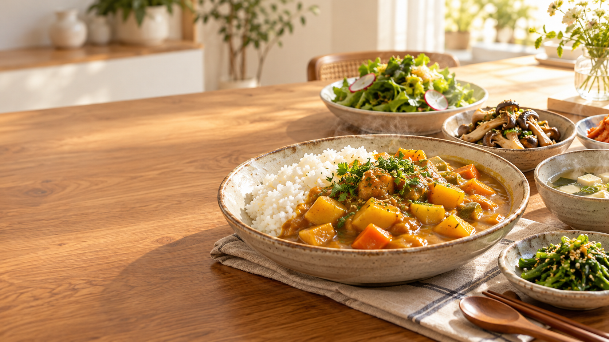

01온담의 식탁
오늘의 한 끼를 골라보세요.
가상의 간편식과 요리 아이디어입니다. 제품의 실제 성분·영양·알레르기 정보를 대신하지 않습니다.
6개의 항목
조건에 맞는 항목이 없습니다. 다른 검색어나 카테고리를 선택해 주세요.
다음 이야기를 함께
온담의 식탁
가상의 간편식과 요리 아이디어입니다. 제품의 실제 성분·영양·알레르기 정보를 대신하지 않습니다.
6개의 항목
조건에 맞는 항목이 없습니다. 다른 검색어나 카테고리를 선택해 주세요.
다음 이야기를 함께